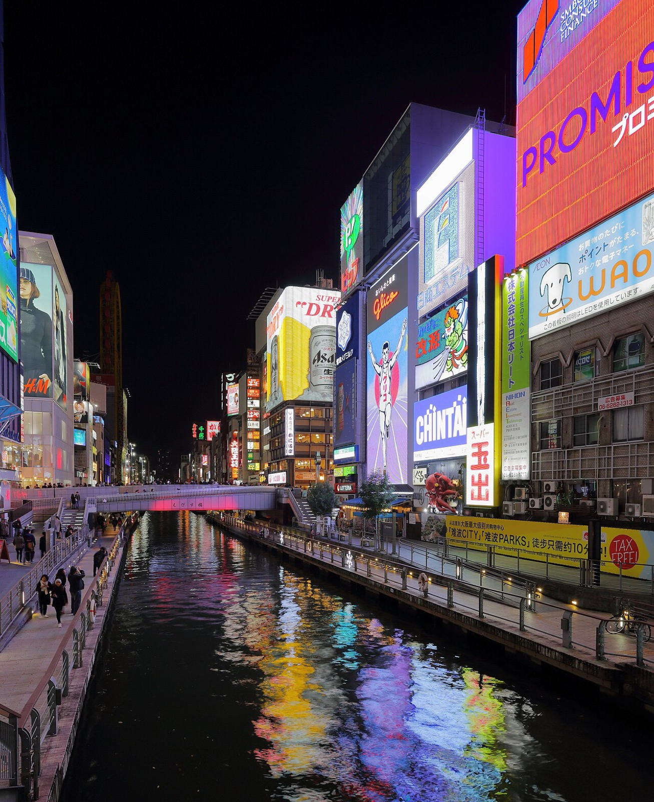
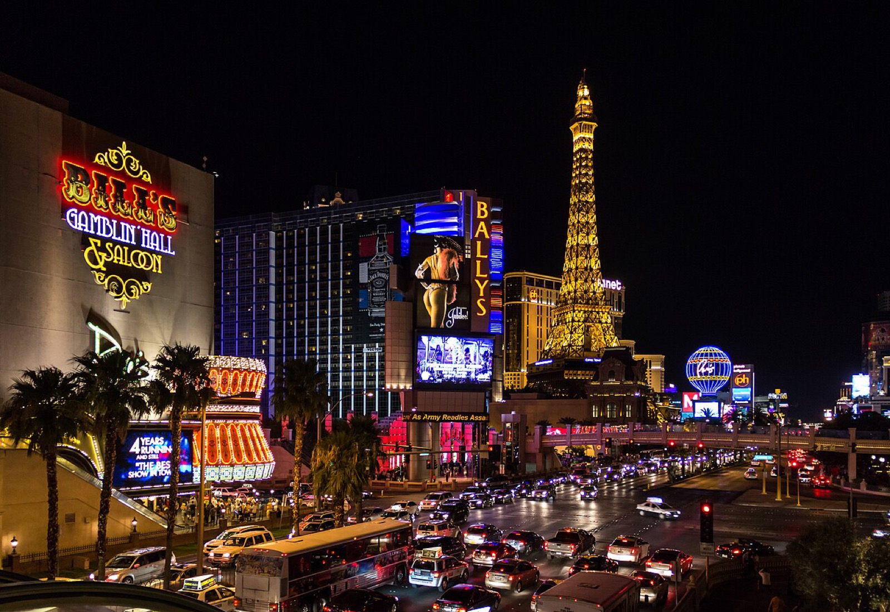
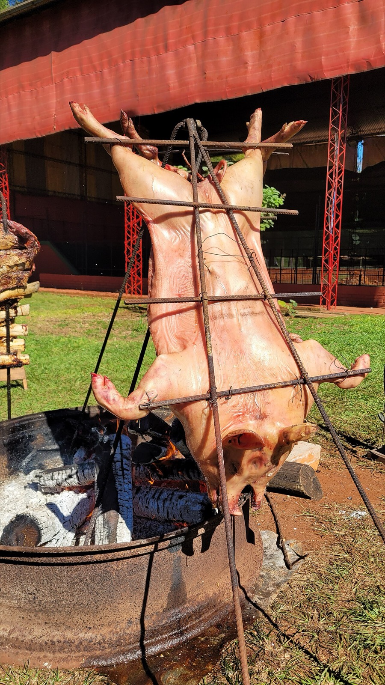

03 / Trip
여행 앨범
다녀온 오사카와 라스베가스, 그리고 언젠가 갈 아르헨티나. 사진과 배경음악 아래에 실제 여행 예산과 날씨를 얹었습니다.
Soundtrack — <audio>
여행 중 즐겨 듣던 BGM
Album — <picture> · <img>

여행 후기
글리코 간판 아래 네온이 강물에 번지는 도톤보리의 밤, 타코야키와 오코노미야키로 배를 채우며 걷던 거리가 오래 기억에 남습니다.

여행 후기
밤이 되면 더 화려해지는 사막 위의 도시. 쉴 새 없이 반짝이는 The Strip을 걷는 것만으로도 비현실적인 여행이었습니다.

가고 싶은 이유
언젠가 아르헨티나에 가서 장작에 구운 아사도를 말벡 와인과 함께 원 없이 먹는 고기 파티가 버킷리스트입니다. 소고기의 나라에서 제대로 된 파릴라를 경험해보고 싶습니다.
사진 출처 — 오사카: Martin Falbisoner · 라스베가스: Dietmar Rabich · 아르헨티나: Horacio Cambeiro. 모두 Wikimedia Commons, CC BY-SA 4.0 (creativecommons.org/licenses/by-sa/4.0) 라이선스로 이용했습니다.
밤이 되면 더 화려해지는 사막 위의 도시.
— 라스베가스 더 스트립에서
Vlog — <video>
영상 출처 — “2022 Danjiri Festival at Otori Shrine in Sakai, Osaka” by Naokijp, Wikimedia Commons, CC BY-SA 4.0 (creativecommons.org/licenses/by-sa/4.0)
Plans — TesseraJS · Canvas donut · weather / exchange